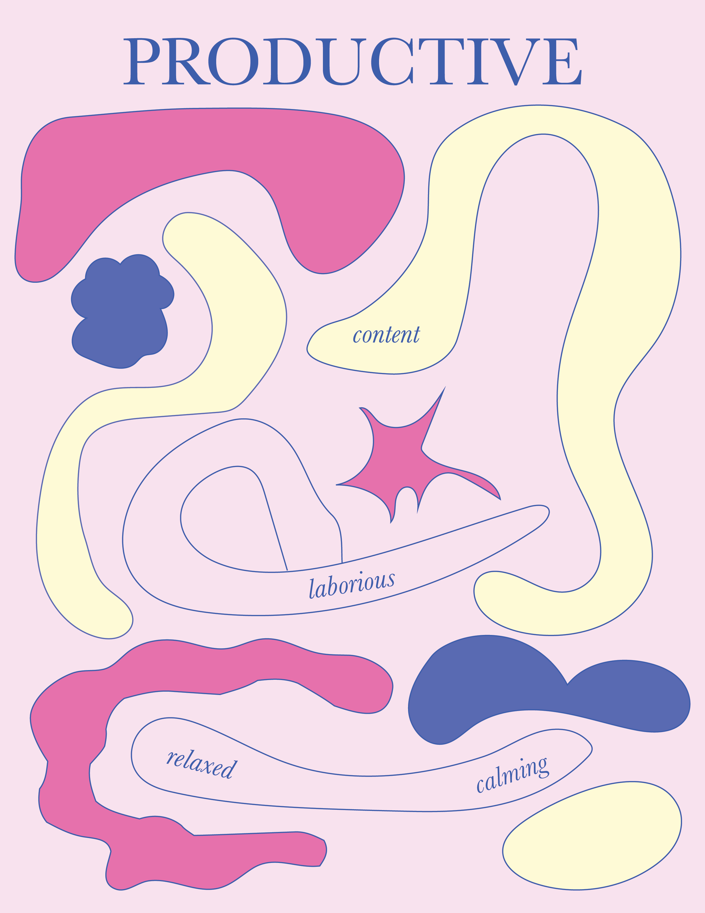

Everyone has a different day,
so the same instructions
produce a
different poster for
each person. The process is identical.
The inputs (your mood, your
words,
your sleep, what you saw) are not.
02
OTHER WORKS

Bianca’s Poster!
NYU ‘30
Steinhardt Studio Art
For this activity, I mostly just went off how I was feeling that day
instead of thinking too hard about every design choice. It was a Sunday and I felt pretty relaxed,
and for some reason I’ve always associated Sundays with a light yellow, so I knew I wanted to use
that. I chose navy because I was wearing a navy top that day, but it also matched the rainy and
slightly gloomy weather outside. I liked how much the navy contrasted with the yellow, and then I
added pink because I wanted the overall design to still feel soft and gentle.
For the
shapes, I basically just doodled whatever came to mind. Most of them are thick and flowy because my
day felt like it went by pretty smoothly and I wasn’t rushing around. I also made some of the shapes
more lumpy and uneven because there was still some uncertainty about how my work would turn out and
how the rest of my day would go. The one sharp shape in the middle is different because I had a
really weird horror dream the night before, so I wanted something that interrupted all the softer
shapes. I chose “Productive” as the title because it was my longest word, but it also described my
day pretty well. Even though I was relaxed, I still got a lot done.